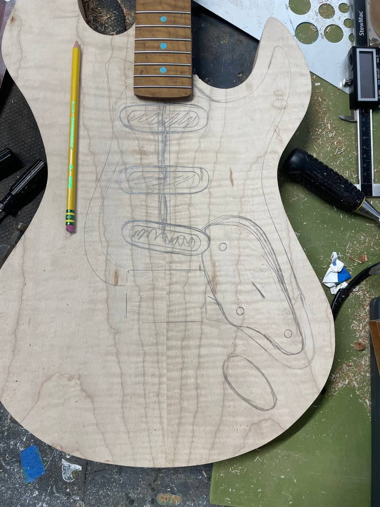

Blue quilted maple over mahogany. SSS single coil config. Built to work through every pickup configuration I hadn't tried yet.
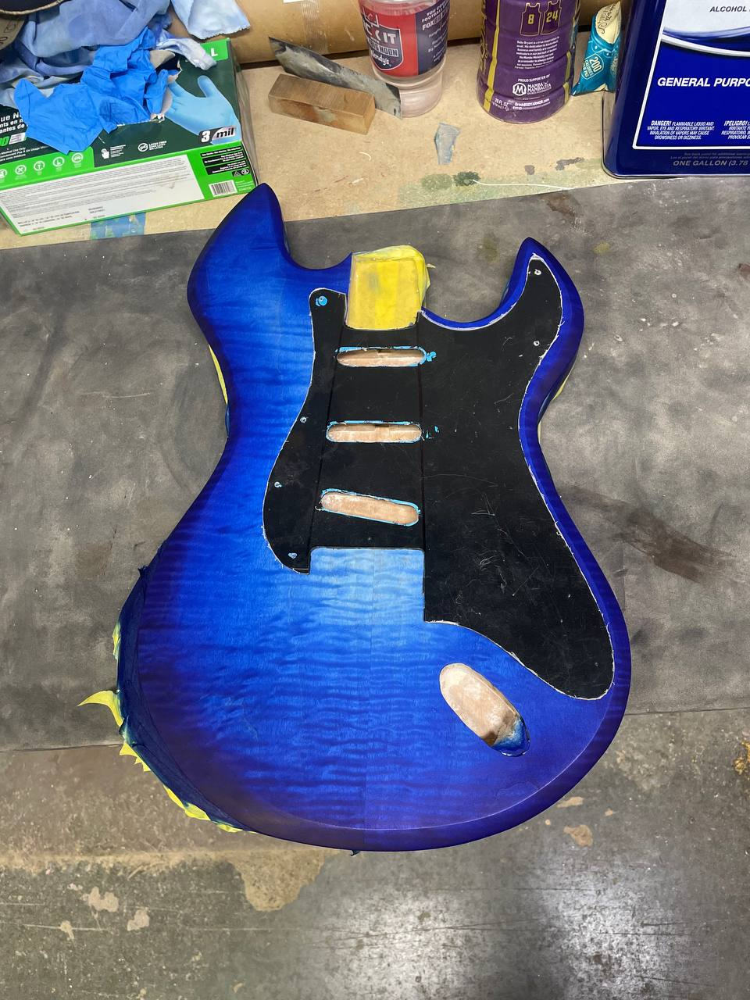
The Blue Strat started as a pickup problem. The Relic Messenger ran a p90 stack, one configuration, no selector. I wanted the opposite — SSS, three single coils, five-way switch, every in-between position available. The body was going to be Strat-style regardless. The top didn't have to be.
The maple came through with exceptional quilt figure — you can see it in the raw shot below, the grain already rolling in waves before any stain touched it. Blue was the call. It's a hard color to chase in nitro because it shifts with the figure: patches read cobalt, the crests go almost teal, the tight curls go near-navy. I built the tint up in thin coats and let the figure take the color where it wanted.
The top is cobalt blue quilted maple. The back is the same quilted maple stained amber. Same wood, completely different guitar depending on which side you're looking at.
The edge where blue meets amber — that seam is the shot I kept coming back to. Two finishes, one piece of wood, you'd never know from looking at just one side.
SSS setup: three single coils, white pickguard, standard Strat routing. Roasted maple neck, turquoise dot inlays. The whole point was to sit with every pickup combination and actually work through them. That part's still happening.
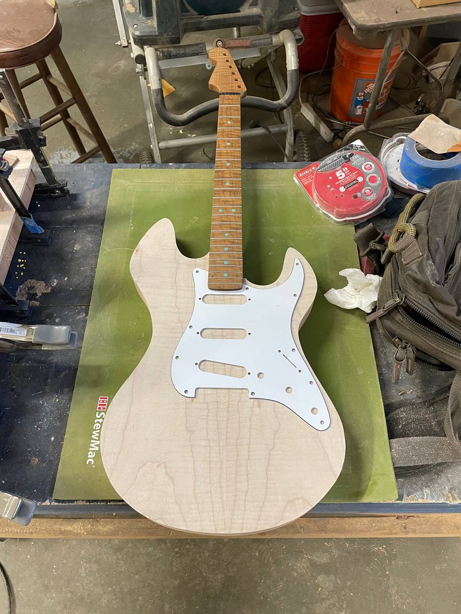

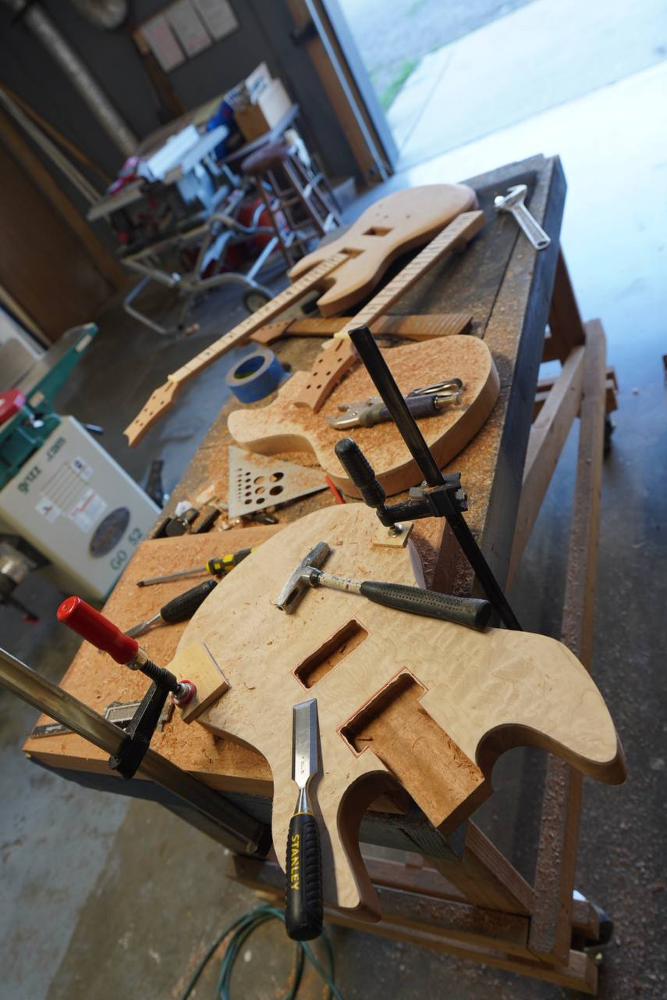
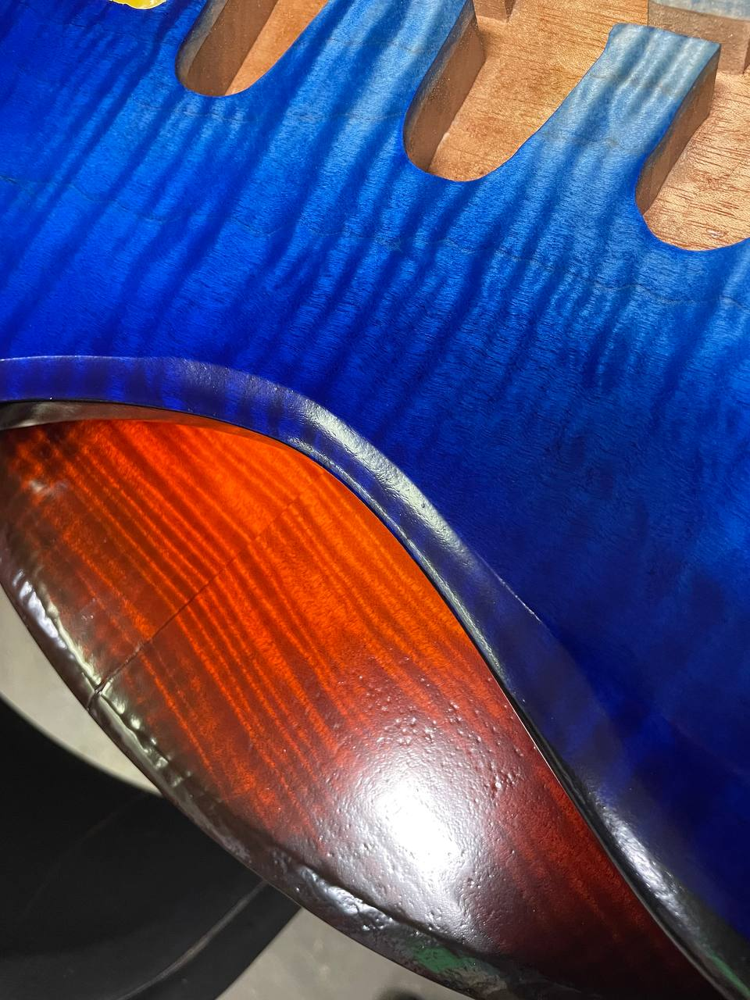
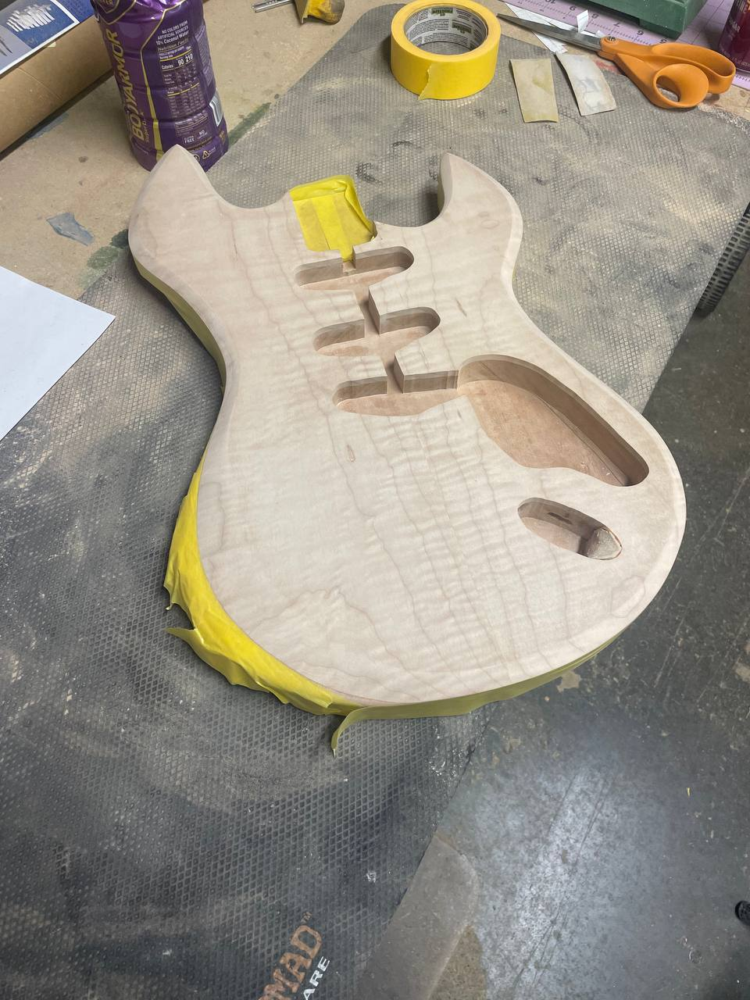
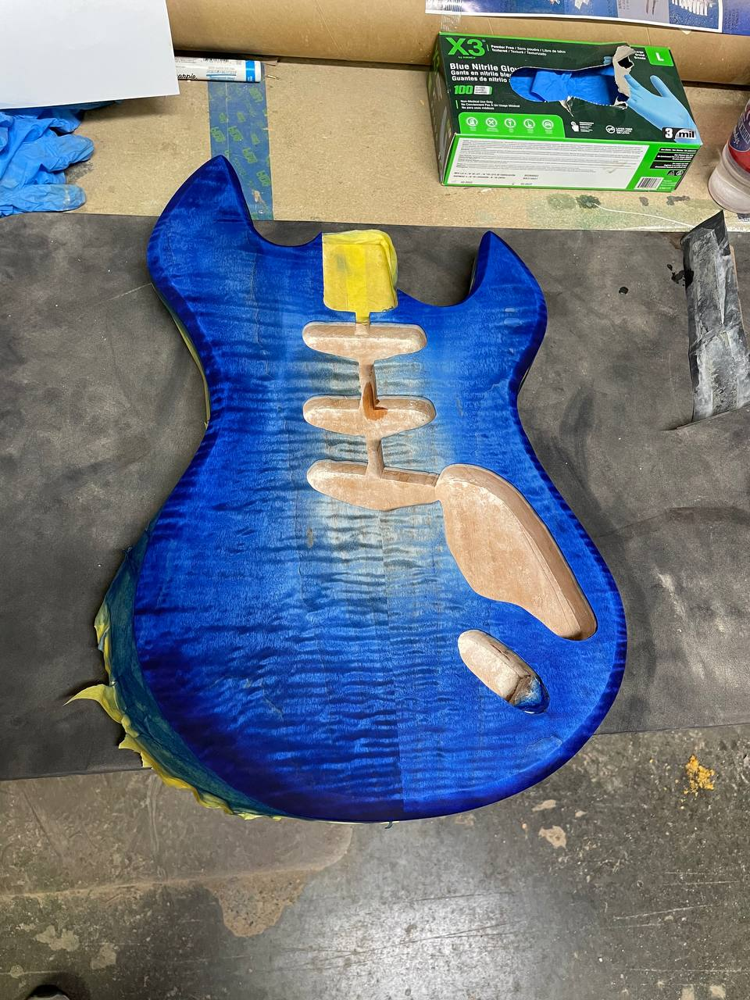
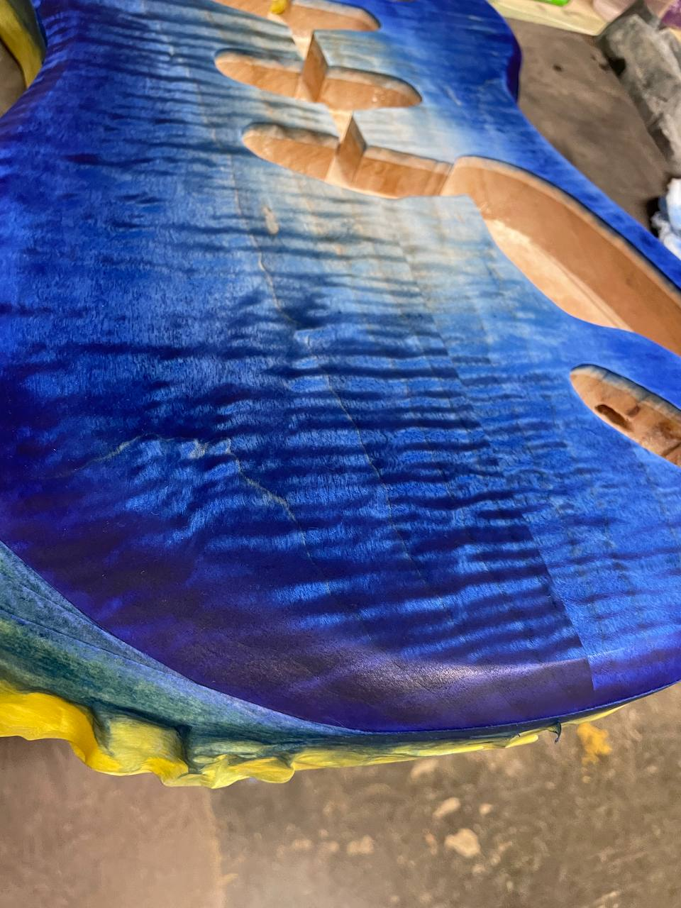
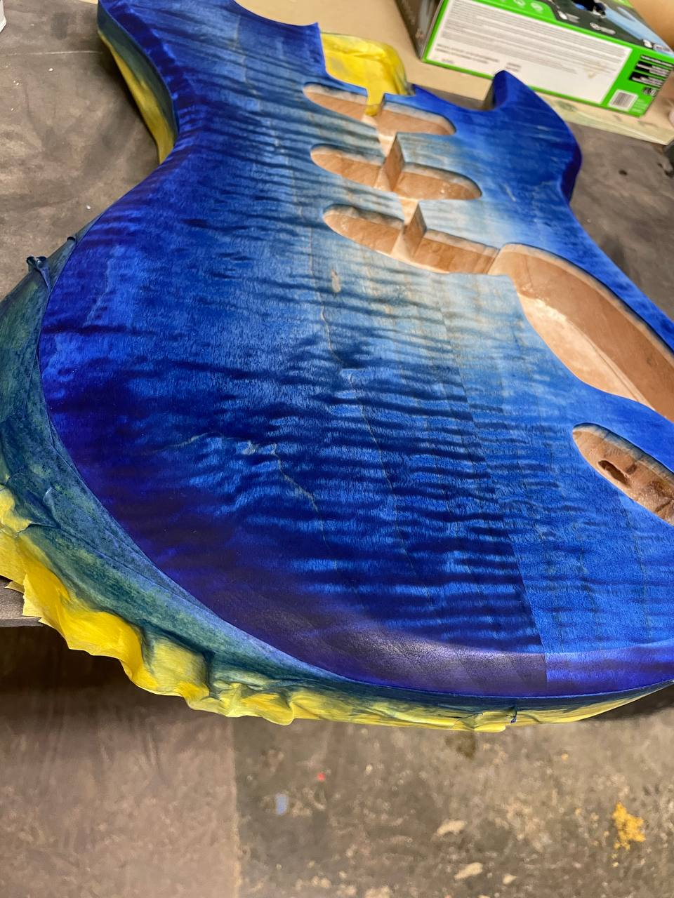
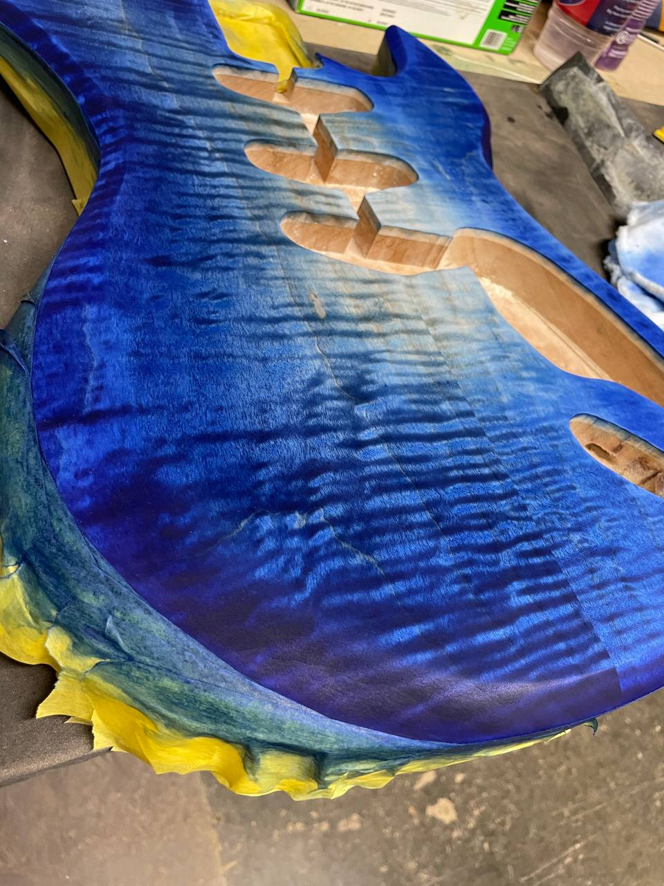
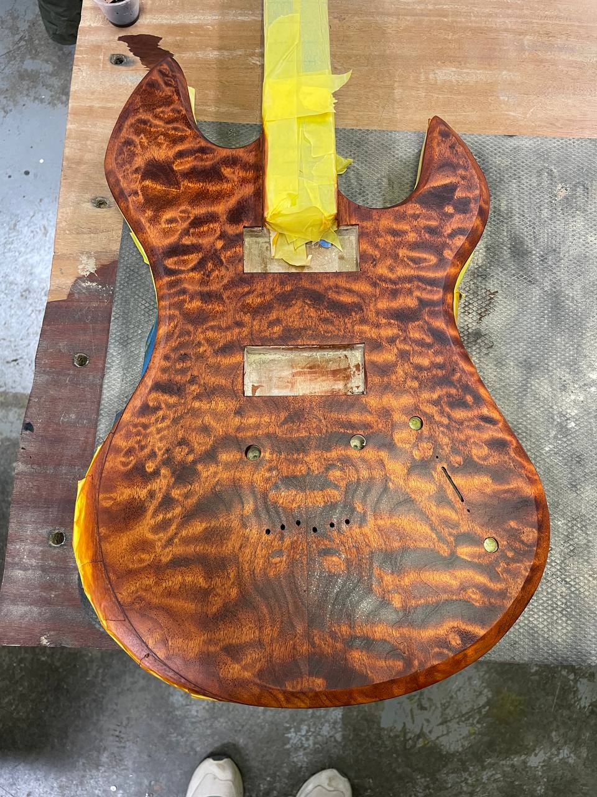
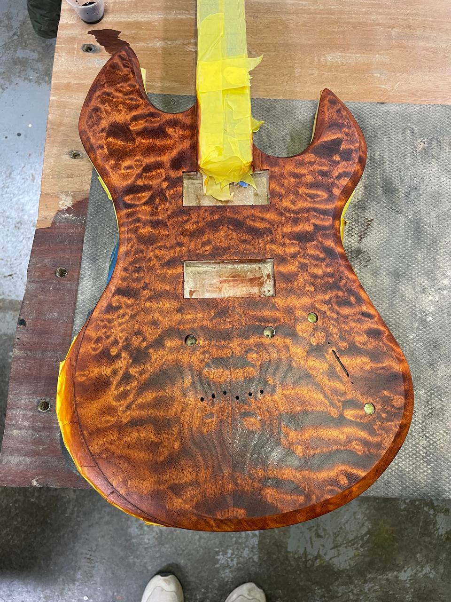